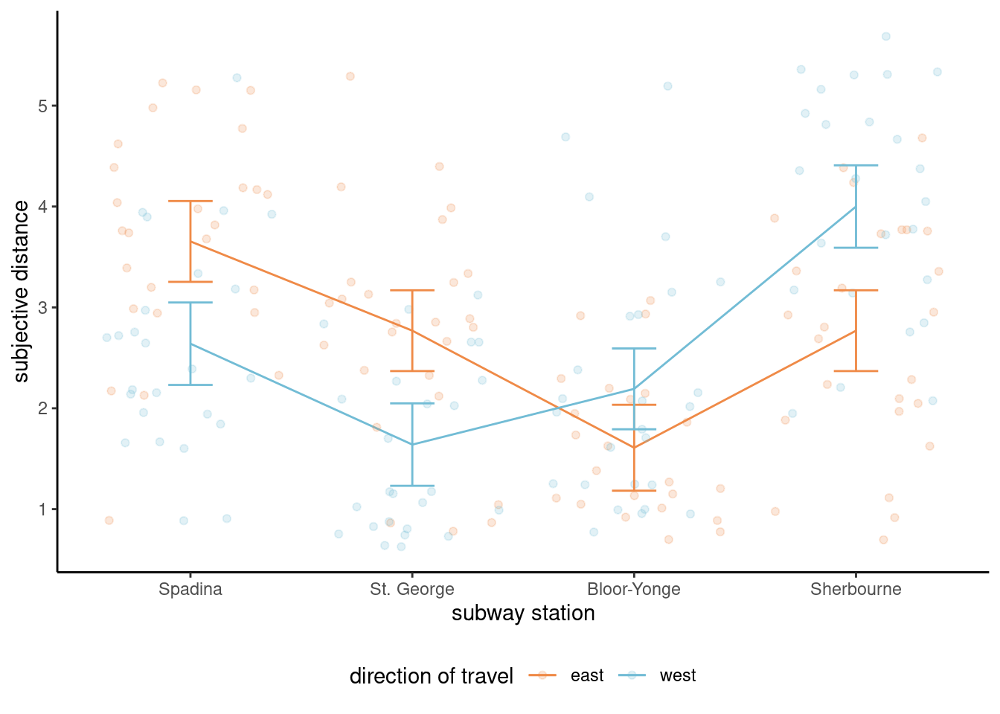
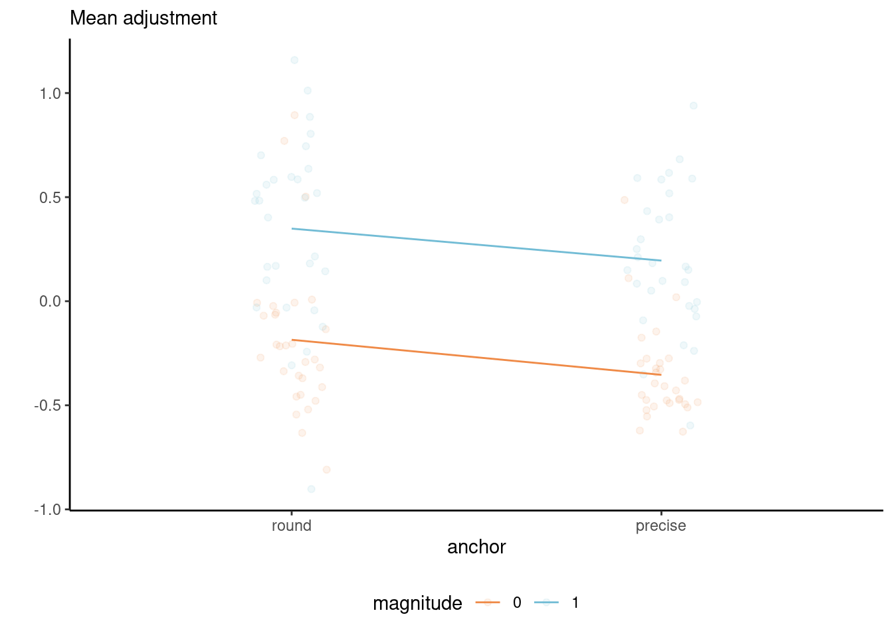
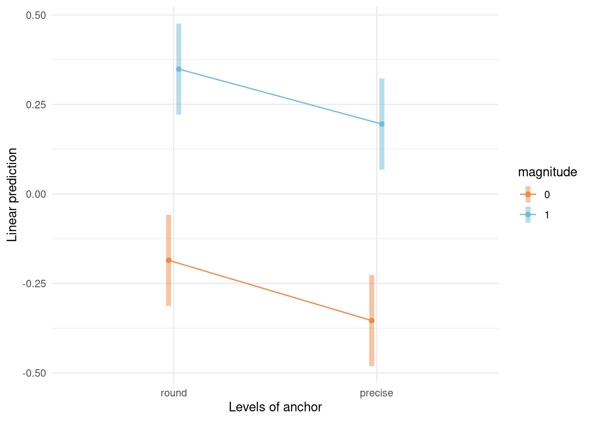
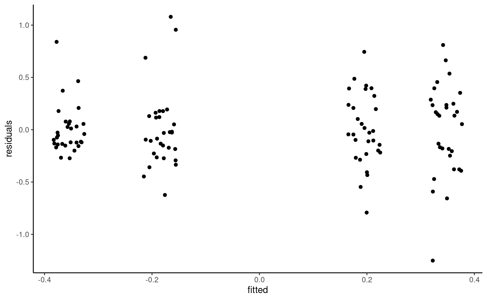

| Spadina | St. George | Bloor-Yonge | Sherbourne | |
|---|---|---|---|---|
| east | 26 | 26 | 23 | 26 |
| west | 25 | 25 | 26 | 25 |
5 Complete factorial designs
We next consider experiments and designs in which there are multiple factors being manipulated by the experimenter simultaneously. Before jumping into the statistical analysis, let us discuss briefly some examples that will be covered in the sequel.
Example 5.1 (Psychological ownership of borrowed money) Supplemental Study 5 from Sharma, Tully, and Cryder (2021) checks the psychological perception of borrowing money depending on the label. The authors conducted a 2 by 2 between-subject comparison (two-way ANOVA) varying the type of debt (whether the money was advertised as credit or loan) and the type of purchase the latter would be used for (discretionary spending or need). The response is the average of the likelihood and interest in the product, both measured using a 9 point Likert scale from 1 to 9.
Example 5.2 (Spatial orientation shrinks and expands psychological distance) Maglio and Polman (2014) measured the subjective distance on travel based on the direction of travel. They conducted an experiment in the Toronto subway green line, asking commuters from Bay station to answer the question “How far away does the [name] station feel to you?” using a 7 point Likert scale ranging from very close (1) to very far (7). The stations name were one of Spadina, St. George, Bloor–Yonge and Sherbourne (from West to East).
As there are four stations and two directions of travel (a 4 by 2 design), the scientific question of interest for subjective measures of distance would consist of perceiving differently the distance depending on the direction of travel. We could also wonder whether destinations that are two stations away from Bay (Spadina and Sherbourne) would be considered equidistant, and similarly for the other two.
5.1 Efficiency of multiway analysis of variance.
Consider the setting of Sharma, Tully, and Cryder (2021) and suppose we want to check the impact of debt and collect a certain number of observations in each group. If we suspected the label had an influence, we could run a one-way analysis of variance for each spending type separately (thus, two one-way ANOVA each with two groups). We could do likewise if we wanted instead to focus on whether the spending was discretionary in nature or not, for each label: together, this would give a total of eight sets of observations. Combining the two factors allows us to halve the number of groups/samples we collect in this simple setting: this highlights the efficiency of running an experiment modifying all of these instances at once, over a series of one-way analysis of variance. This concept extends to higher dimension when we manipulate two or more factors. Factorial designs allow us to study the impact of multiple variables simultaneously with fewer overall observations.
The drawback is that as we increase the number of factors, the total number of subgroups increases: with a complete design1 and with factors \(A\), \(B\), \(C\), etc. with \(n_a\), \(n_b\), \(n_c\), \(\ldots\) levels, we have a total of \(n_a\times n_b \times n_c \times \cdots\) combinations and the number of observations needed to efficiently measure the group means increases quickly. This is the curse of dimensionality: the larger the number of experimental treatments manipulated together, the larger the sample size needed. A more efficient approach, which we will cover in later section, relies on measuring multiple observations from the same experimental units, for example by giving multiple tasks (randomly ordered) to participants.
Intrinsically, the multiway factorial design model description does not change relative to a one-way design: the analysis of variance describes the sample mean for the response in each subgroup,
Consider a two-way analysis of variance model. This is a linear model with two factors, \(A\) and \(B\), with respectively \(n_a\) and \(n_b\) levels. The response \(Y_{ijk}\) of the \(k\)th measurement in group \((a_i, b_j)\) is \[ \underset{\text{response}\vphantom{b}}{Y_{ijk}} = \underset{\text{subgroup mean}}{\mu_{ij}} + \underset{\text{error term}}{\varepsilon_{ijk}} \tag{5.1}\] where
- \(Y_{ijk}\) is the \(k\)th replicate for \(i\)th level of factor \(A\) and \(j\)th level of factor \(B\)
- \(\mu_{ij}\) is the average response of measurements in group \((a_i, b_j)\)
- \(\varepsilon_{ijk}\) are independent error terms with mean zero and standard deviation \(\sigma\).
This, it turns out, is a special case of linear regression model. We could build contrasts for comparing group averages, but it will more convenient to reparametrize the model so that hypotheses of interest are directly expressed in terms of the parameters.
For example, in the Maglio and Polman (2014) study, we could gather observations for each factor combination in a table, where direction is the row and station the column.
\(A\) station |
\(B\) direction |
\(b_1\) (east) |
\(b_2\) (west) |
row mean |
|---|---|---|---|---|
\(a_1\) (Spadina) |
\(\mu_{11}\) | \(\mu_{12}\) | \(\mu_{1.}\) | |
\(a_2\) (St. George) |
\(\mu_{21}\) | \(\mu_{22}\) | \(\mu_{2.}\) | |
\(a_3\) (Bloor-Yonge) |
\(\mu_{31}\) | \(\mu_{32}\) | \(\mu_{3.}\) | |
\(a_4\) (Sherbourne) |
\(\mu_{41}\) | \(\mu_{42}\) | \(\mu_{4.}\) | |
| column mean | \(\mu_{.1}\) | \(\mu_{.2}\) | \(\mu\) |
The \(i\)th row mean represents the average response across all levels of \(B\), \(\mu_{i.} = (\mu_{i1} + \cdots + \mu_{in_b})/n_b\) and similarly for the average of the \(j\)th column, \(\mu_{.j} = (\mu_{1j} + \cdots + \mu_{n_aj})/n_a.\) Finally, the overall average is \[\mu = \frac{\sum_{i=1}^{n_a} \sum_{j=1}^{n_b} \mu_{ij}}{n_an_b}.\]
Each subgroup average \(\mu_{ij}\) will be estimated as the sample mean of observations in their group and we would use the above formulae to obtain estimates of the row, column and overall means \(\widehat{\mu}_{i.}\), \(\widehat{\mu}_{.j}\) and \(\widehat{\mu}\). If the sample is balanced, meaning the number of observations is the same, these will be the same as summing over all observations in a row, column or table and then averaging. In general setup, however, we will give equal weight to each subgroup average.
Looking at Table 5.2, we can see that the number of observations is not exactly the same. In general, attrition and non-response can lead to unequal cell sample size, but you should strive to gather roughly equal number of observations. The main consequence is that different decompositions of the variance will lead to different tests, whereas no such ambiguity exists for balanced data.
5.2 Interactions
Table 5.1 shows the individual mean of each subgroup. From these, we may be interested in looking at the experiment as a single one-way analysis of variance model with eight subgroups, or as a series of one-way analysis of variance with either direction or station as sole factor.
We will use particular terminology to refer to these:
- simple effects: difference between levels of one in a fixed combination of others. Simple effects are comparing cell averages within a given row or column.
- main effects: differences relative to average for each condition of a factor. Main effects are row/column averages.
- interaction effects: when simple effects differ depending on levels of another factor. Interactions effects are differences relative to the row or column average.
In other words, an interaction occurs when some experimental factors, when coupled together, have different impacts than the superposition of each. An interaction between two factors occurs when the average effect of one independent variable depends on the level of the other.
If there is a significant interaction, the main effects are not of interest since they are misleading. Rather, we will compute the simple effects by making the comparison one at level at the time.
In our example of Maglio and Polman (2014), a simple effect would be comparing the distance between Spadina and Sherbourne for east. The main effect for the direction would be the average perceived distance for east and for west. Finally, the interaction would measure how much these differ by station depending on direction.

To better understand, we consider the average response and suppose we have access to the true population average for each sub-treatment. We can then represent the population using a line graph with the two factors, one being mapped to color and another to the \(x\)-axis. Figure 5.1 shows what happens under all possible scenarios with a 2 by 2 design. When there is no overall effect, the mean is constant. If there isn’t a main effect of \(A\), the average of the two mean response for \(a_1\) and \(a_2\) are the same, etc. Interactions are depicted by non-parallel lines.
It’s clear from Figure 5.1 that looking only at the average of \(A\) alone (the main effect) isn’t instructive when we are in the presence of an interaction: rather, we should be comparing the values of \(A\) for \(b_1\) separately than those for \(b_2\), and vice-versa, using simple effects, otherwise our conclusions may be misleading.
Example 5.3 (Interaction plots for Maglio and Polman (2014)) The hypothesis of interest is the interaction; for the time being, we can simply plot the average per group. Since the summary statistics can hide important information such as the uncertainty, we add 95% confidence intervals for the subgroup averages and superimpose jittered observations to show the spread of the data. Based on Figure 5.2, there appears to be at least an interaction between station and direction of travel, in addition to a main effect for station. Formal hypothesis testing can help check this intuition.

5.3 Model parametrization
The following section is technical and may be omitted.
The model parametrized in terms of subgroup or cell average is okay in Equation 5.1, but it doesn’t help us if we want to check for the presence of main effects and interaction, even if it would be possible to specify the contrasts required to test these hypotheses. We can however express the model in terms of main effects and interactions.
We consider the alternative formulation \[\begin{align*} Y_{ijk} = \mu + \alpha_i + \beta_j + (\alpha\beta)_{ij} + \varepsilon_{ijk}, \end{align*}\] where
- \(\mu\) is the average of all subgroup averages, termed overall mean.
- \(\alpha_i = \mu_{i.} - \mu\) is the mean of level \(A_i\) minus the overall mean.
- \(\beta_j = \mu_{.j} - \mu\) is the mean of level \(B_j\) minus overall mean.
- \((\alpha\beta)_{ij} = \mu_{ij} - \mu_{i.} - \mu_{.j} + \mu\) is the interaction term for \(A_i\) and \(B_j\) which encodes the effect of both variable not already captured by the main effects.
A rapid calculation shows that there are more coefficients than the number of cells and subgroups (\(n_an_b\) cells overall) in our table. The model is overparametrized: to get away with this, we impose constraints to remove redundancies. The idea is that if we know \(n_a-1\) of the mean for factor \(A\) and the global average is a combination of these, we can deduce the value for the last row mean. The model formulation in terms of difference from the global average or main effect ensures that we can test for main effects for factor \(A\) by setting \(\mathscr{H}_0: \alpha_1 = \cdots = \alpha_{n_a-1}=0\). The \(1 + n_a + n_b\) sum to zero constraints, \[\sum_{i=1}^{n_a} \alpha_i=0, \quad \sum_{j=1}^{n_b} \beta_j=0, \quad \sum_{j=1}^{n_b} (\alpha\beta)_{ij}=0, \quad \sum_{i=1}^{n_a} (\alpha\beta)_{ij}=0,\] restore identifiability.
The redundancy in information, due to the fact main effects are expressible as row and column averages, and the overall mean as the average of all observations, will arise again when we consider degrees of freedom for tests.
To be continued…
Example 5.4 (Testing for Psychological ownership of borrowed money) Sharma, Tully, and Cryder (2021) first proceeded with the test for the interaction. Since there are one global average and two main effect (additional difference in average for both factors debttype and purchase), the interaction involves one degree of freedom since we go from a model with three parameters describing the mean to one that has a different average for each of the four subgroups.
The reason why this is first test to carry out is that if the effect of one factor depends on the level of the other, as shown in Figure 5.1, then we need to compare the label of debt type separately for each type of purchase and vice-versa using simple effects. If the interaction on the contrary isn’t significant, then we could pool observations instead and average across either of the two factors, resulting in the marginal comparisons with the main effects.
Fitting the model including the interaction between factors ensures that we keep the additivity assumption and that our conclusions aren’t misleading: the price to pay is additional mean parameters to be estimated, which isn’t an issue if you collect enough data, but can be critical when data collection is extremely costly and only a few runs are allowed.
In R, we include both factors in a formula as response ~ factorA * factorB, the * symbol indicating that both are allowed to interact; in the main effect model, we would use instead + to reflect that the effects of both factors add up.
# Analysing Supplementary Study 5
# of Sharma, Tully, and Cryder (2021)
data(STC21_SS5, package = "hecedsm")
mod <- aov(likelihood ~ purchase*debttype,
data = STC21_SS5)
model.tables(mod, type = "means")
#> Tables of means
#> Grand mean
#>
#> 4.88
#>
#> purchase
#> discretionary need
#> 4.182 5.579
#> rep 751.000 750.000
#>
#> debttype
#> credit loan
#> 5.127 4.631
#> rep 753.000 748.000
#>
#> purchase:debttype
#> debttype
#> purchase credit loan
#> discretionary 4.5 3.8
#> rep 392.0 359.0
#> need 5.7 5.4
#> rep 361.0 389.0
# Analysis of variance reveals
# non-significant interaction
# of purchase and type
car::Anova(mod, type = 3)
#> Anova Table (Type III tests)
#>
#> Response: likelihood
#> Sum Sq Df F value Pr(>F)
#> (Intercept) 7974 1 1040.96 < 2e-16 ***
#> purchase 283 1 36.91 1.6e-09 ***
#> debttype 88 1 11.55 0.0007 ***
#> purchase:debttype 14 1 1.79 0.1817
#> Residuals 11467 1497
#> ---
#> Signif. codes: 0 '***' 0.001 '**' 0.01 '*' 0.05 '.' 0.1 ' ' 1
# Main effects
emmeans::emmeans(mod,
specs = "debttype",
contr = "pairwise")
#> $emmeans
#> debttype emmean SE df lower.CL upper.CL
#> credit 5.12 0.101 1497 4.93 5.32
#> loan 4.63 0.101 1497 4.43 4.83
#>
#> Results are averaged over the levels of: purchase
#> Confidence level used: 0.95
#>
#> $contrasts
#> contrast estimate SE df t.ratio p.value
#> credit - loan 0.496 0.143 1497 3.470 0.0005
#>
#> Results are averaged over the levels of: purchase
# Pairwise comparisons within levels of purchase
# Simple effect
emmeans::emmeans(mod,
specs = c("purchase", "debttype"),
by = "purchase",
contr = "pairwise")
#> $emmeans
#> purchase = discretionary:
#> debttype emmean SE df lower.CL upper.CL
#> credit 4.51 0.140 1497 4.24 4.78
#> loan 3.82 0.146 1497 3.54 4.11
#>
#> purchase = need:
#> debttype emmean SE df lower.CL upper.CL
#> credit 5.74 0.146 1497 5.45 6.02
#> loan 5.43 0.140 1497 5.16 5.71
#>
#> Confidence level used: 0.95
#>
#> $contrasts
#> purchase = discretionary:
#> contrast estimate SE df t.ratio p.value
#> credit - loan 0.687 0.202 1497 3.400 0.0007
#>
#> purchase = need:
#> contrast estimate SE df t.ratio p.value
#> credit - loan 0.305 0.202 1497 1.510 0.1318In the analysis of variance table, we focus exclusively on the last line with the sum of squares for purchase:debttype. The \(F\) statistic is 1.79; using the \(\mathsf{F}\) (1, 1497) distribution as benchmark, we obtain a \(p\)-value of 0.18 so there is no evidence the effect of purchase depends on debt type.
We can thus pool data and look at the effect of debt type (loan or credit) overall by combining the results for all purchase types, one of the planned comparison reported in the Supplementary material. To do this in R with the emmeans package, we use the emmeans function and we quote the factor of interest (i.e., the one we want to keep) in specs. By default, this will compute the estimate marginal means: the contr = "pairwise" indicates that we want the difference between the two, which gives us the contrasts.
To get the simple effects, we give both variables in specs as factors for which to compute subgroup means, then set additionally the by command to specify which variable we want separate results for. We get the difference in average between credit and loan labels for each purchase type along with the \(t\) statistics for the marginal contrast and the \(p\)-value. The simple effects suggest that the label has an impact on perception only for discretionary expenses rather than needed ones, which runs counter-intuitively with the lack of interaction.
Maglio and Polman (2014) considered the relative perception of distance from Bay station in Toronto. We modify the data so that we consider station distance in direction of travel (rather than station names). The categorical variable stdist has labels \((-2, -1, +1, +2\)) for stations Spadina, St. Georges, Bloor-Yonge, Sherbourne in direction East, and opposite signs in the other direction: see Figure 5.3 for the map. We are interested in knowing whether two stations behind (stdist\(=-2\)) is perceived the same as two stations ahead (stdist\(=+2\)).

# Set up parametrization to sum-to-zero for categorical factors
options(contrasts = c("contr.sum", "contr.poly"))
library(emmeans)
mod <- lm(distance ~ stdist * direction, data = MP14_S1)
car::Anova(mod, type = 2)| term | sum of squares | df | stat | p-value |
|---|---|---|---|---|
| stdist | 121.87 | 3 | 37.86 | <0.001 |
| direction | 0.38 | 1 | 0.35 | 0.55 |
| stdist:direction | 5.70 | 3 | 1.77 | 0.15 |
| Residuals | 208.15 | 194 | NA |
We look at the analysis of variance in Table 5.3 to see what the perception of distance is. The \(F\)-tests suggest that there is no interaction, and no effect of direction of travel although there is an uninteresting main effect of station distance (of course, two station apart is considered further from Bay than one station apart).
Since there is no interaction, we can collapse the data to a one-way ANOVA with a single factor (station distance) and consider contrasts. Say we are interested in testing the perception of distance, by looking at average distance of pairs at equal distance \(\mu_{-1} = \mu_{+1}\) and \(\mu_{-2} = \mu_{+2}\).

If we have categories are in the order \((-2, -1, +1, +2)\), the contrast weights are \((-1, 0, 0, 1)\) and \((0, -1, 1, 0)\) or a multiple thereof; the two contrasts are orthogonal. Table 5.4 shows the result of the hypothesis tests: both are significant, even applying a Bonferroni correction. This supports the hypothesis of Maglio and Polman (2014).
| contrast | estimate | std. error | stat | p-value |
|---|---|---|---|---|
| two dist | -1.12 | 0.21 | -5.47 | <0.001 |
| one dist | -0.86 | 0.21 | -4.13 | <0.001 |
Example 5.5 (Precision of anchors and subjective adjustments) We consider data from a replication by Chandler (2016) of Study 4a of Janiszewski and Uy (2008). Both studies measured the amount of adjustment when presented with vague or precise range of value for objects, with potential encouragement for adjusting more the value. Chandler (2016) described the effect in the replication report:
Janiszewski and Uy (2008) conceptualized people’s attempt to adjust following presentation of an anchor as movement along a subjective representation scale by a certain number of units. Precise numbers (e.g. $9.99) imply a finer-resolution scale than round numbers (e.g. $10). Consequently, adjustment along a subjectively finer resolution scale will result in less objective adjustment than adjustment by the same number of units along a subjectively coarse resolution scale.
The experiment is a 2 by 2 factorial design (two-way ANOVA) with anchor (either round or precise) and magnitude (0 for small, 1 for big adjustment) as experimental factors. A total of 120 students were recruited and randomly assigned to one of the four experimental sub-condition, for a total of 30 observations per subgroup (anchor, magnitude). The response variable is majust, the mean adjustment for the price estimate of the item.
# Example of two-way ANOVA with balanced design
data(C16, package = "hecedsm")
# Check for balance
xtabs(formula = ~ anchor + magnitude,
data = C16)
#> magnitude
#> anchor 0 1
#> round 30 30
#> precise 30 30
# Fit two-way ANOVA model
mod <- aov(madjust ~ anchor * magnitude,
data = C16)
# Analysis of variance table
summary(mod)
#> Df Sum Sq Mean Sq F value Pr(>F)
#> anchor 1 0.78 0.78 6.28 0.014 *
#> magnitude 1 8.80 8.80 71.06 1.1e-13 ***
#> anchor:magnitude 1 0.00 0.00 0.01 0.909
#> Residuals 116 14.36 0.12
#> ---
#> Signif. codes: 0 '***' 0.001 '**' 0.01 '*' 0.05 '.' 0.1 ' ' 1The dataset is available from the R package hecedsm as C16. We can see that there are 30 observations in each group in the replication, as advertised. In R, the function aov fits an analysis of variance model for balanced data. Analysis of variance are simple instances of linear regression models, and the main difference between fitting the model using aov and lm is the default parametrization used (aov uses sum-to-zero constraints by default, lm does not). In more general settings (including continuous covariates), we will use lm as a workshorse to fit the model, with an option to set up the contrasts so the output matches our expectations (and needs). The model is fitted as before by specifying the response ~ explanatories: the * notation is a shortcut to specify anchor + magnitude + anchor:magnitude, with the last term separated by a semi-colon : denoting an interaction between two variables. Here, the experimental factors anchor and magnitude are crossed, as it is possible to be in both experimental groups simultaneously.
The interaction.plot function in base R allows one to create an interaction (or profile) plot for a two-way design. More generally, we can simply compute the group means for each combination of the experimental conditions, map the mean response to the \(y\)-axis of a graph and add the experimental factors to other dimensions (\(x\)-axis, panel, color, etc.)
C16 |>
ggplot(mapping = aes(x = anchor,
y = madjust,
color = magnitude)) +
geom_jitter(width = 0.1,
alpha = 0.1) +
stat_summary(aes(group = magnitude),
fun = mean,
geom = "line") +
# Change position of labels
labs(y = "",
subtitle = "Mean adjustment") +
theme_classic() + # change theme
theme(legend.position = "bottom")
In our example, the interaction plot shows a large main effect for magnitude, a smaller one for anchor and no evidence of interaction — despite the uncertainty associated with the estimation, the lines are very close to being parallel. Overlaying the jitter observations shows there is quite a bit of spread, but with limited overlap. Despite the graphical evidence hinting that the interaction isn’t significant, we will fit the two-way analysis of variance model with the interaction unless we invalidate our statistical inference. The emmip function allows one to return a plot automagically.
# Interaction plot
emmeans::emmip(mod,
magnitude ~ anchor,
CIs = TRUE) +
theme_minimal()
Because our dataset is balanced, the marginal means (the summary statistics obtained by grouping the data for a single factor) and the marginal effects (obtained by calculating the average cell means by either row or column) will coincide. There are multiple functions that allow one to obtain estimates means for cells, rows or columns, including functionalities, notably emmeans from the eponymous package and model.tables
# Get grand mean, cell means, etc.
model.tables(mod, type = "means")
#> Tables of means
#> Grand mean
#>
#> 0.00116
#>
#> anchor
#> anchor
#> round precise
#> 0.0816 -0.0793
#>
#> magnitude
#> magnitude
#> 0 1
#> -0.270 0.272
#>
#> anchor:magnitude
#> magnitude
#> anchor 0 1
#> round -0.185 0.349
#> precise -0.354 0.195
# Cell means
emmeans(object = mod,
specs = c("anchor", "magnitude"),
type = "response")
#> anchor magnitude emmean SE df lower.CL upper.CL
#> round 0 -0.185 0.0642 116 -0.313 -0.058
#> precise 0 -0.354 0.0642 116 -0.481 -0.227
#> round 1 0.349 0.0642 116 0.221 0.476
#> precise 1 0.195 0.0642 116 0.068 0.322
#>
#> Confidence level used: 0.95
# Marginal means
emmeans(object = mod,
specs = "anchor",
type = "response")
#> anchor emmean SE df lower.CL upper.CL
#> round 0.0816 0.0454 116 -0.0083 0.1716
#> precise -0.0793 0.0454 116 -0.1693 0.0107
#>
#> Results are averaged over the levels of: magnitude
#> Confidence level used: 0.95
emmeans(object = mod,
specs = "anchor",
type = "response")
#> anchor emmean SE df lower.CL upper.CL
#> round 0.0816 0.0454 116 -0.0083 0.1716
#> precise -0.0793 0.0454 116 -0.1693 0.0107
#>
#> Results are averaged over the levels of: magnitude
#> Confidence level used: 0.95
# These match summary statistics
C16 |>
group_by(magnitude) |>
summarize(margmean = mean(madjust))
#> # A tibble: 2 × 2
#> magnitude margmean
#> <fct> <dbl>
#> 1 0 -0.270
#> 2 1 0.272
C16 |>
group_by(anchor) |>
summarize(margmean = mean(madjust))
#> # A tibble: 2 × 2
#> anchor margmean
#> <fct> <dbl>
#> 1 round 0.0816
#> 2 precise -0.0793Since the data are balanced, we can look at the (default) analysis of variance table produced using anova function2
anova(mod)
#> Analysis of Variance Table
#>
#> Response: madjust
#> Df Sum Sq Mean Sq F value Pr(>F)
#> anchor 1 0.78 0.78 6.28 0.014 *
#> magnitude 1 8.80 8.80 71.06 1.1e-13 ***
#> anchor:magnitude 1 0.00 0.00 0.01 0.909
#> Residuals 116 14.36 0.12
#> ---
#> Signif. codes: 0 '***' 0.001 '**' 0.01 '*' 0.05 '.' 0.1 ' ' 1The output confirms our intuition that there is not much different from zero, with a strong effect for magnitude of adjustment and a significant, albeit smaller one, for anchor type.
While the conclusions are probably unambiguous due to the large evidence, it would be useful to check the model assumptions. The sample size is just enough to forego normality checks, but the quantile-quantile plot can be useful to detect outliers and extremes. Outside of one potential value much lower than it’s group mean, there is no cause for concern.
car::qqPlot(mod, id = FALSE)
With 30 observations per group and no appearance of outlier, we need rather to worry about additivity and possibly heterogeneity arising from the treatment. Independence is plausible based on the context.
The Tukey-Anscombe plot of residuals against fitted values (the group means) indicate no deviation, but the variance appears to be larger for the two groups with a large adjustment. Because the response takes negative values, we can simply proceed with fitting a two-way analysis in which each of the subgroups has mean \(\mu_{ij}\) and standard deviation \(\sigma_{ij}\): in other words, only the data for each subgroup (anchor, magnitude) are used to estimate the summary statistics of that group.
# Evidence of unequal variance
ggplot(data = data.frame(residuals = resid(mod),
fitted = fitted(mod)),
mapping = aes(x = fitted,
y = residuals)) +
geom_jitter(width = 0.03, height = 0) +
theme_classic()
# Equality of variance - Brown-Forsythe
car::leveneTest(mod)
#> Levene's Test for Homogeneity of Variance (center = median)
#> Df F value Pr(>F)
#> group 3 2.81 0.042 *
#> 116
#> ---
#> Signif. codes: 0 '***' 0.001 '**' 0.01 '*' 0.05 '.' 0.1 ' ' 1
Given the Brown-Forsythe test output, we can try fitting a different variance in each group, as there are enough observations for this. The function gls in the nlme package fits such models; the weight argument being setup with a constant variance (~1) per each combination of the crossed factors anchor * magnitude.
library(nlme)
library(car)
# Fit a variance per group
mod2 <- nlme::gls(
model = madjust ~ anchor * magnitude,
data = C16,
weights = nlme::varIdent(
form = ~ 1 | anchor * magnitude))
# Different ANOVA - we use type II here
car::Anova(mod2, type = 2)
#> Analysis of Deviance Table (Type II tests)
#>
#> Response: madjust
#> Df Chisq Pr(>Chisq)
#> anchor 1 6.77 0.0093 **
#> magnitude 1 79.92 <2e-16 ***
#> anchor:magnitude 1 0.01 0.9086
#> ---
#> Signif. codes: 0 '***' 0.001 '**' 0.01 '*' 0.05 '.' 0.1 ' ' 1We can see the unequal std. deviation per group when passing the model with unequal variance and unequal means and computing the estimated marginal means. The package emmeans automatically adjusts for these changes.
emmeans(object = mod2,
specs = c("anchor", "magnitude"))
#> anchor magnitude emmean SE df lower.CL upper.CL
#> round 0 -0.185 0.0676 29.0 -0.324 -0.047
#> precise 0 -0.354 0.0422 29.0 -0.440 -0.267
#> round 1 0.349 0.0796 29.0 0.186 0.512
#> precise 1 0.195 0.0618 28.9 0.069 0.322
#>
#> Degrees-of-freedom method: satterthwaite
#> Confidence level used: 0.95
# Compute pairwise difference for anchor
marg_effect <- emmeans(object = mod2,
specs = "anchor") |>
pairs()
marg_effect
#> contrast estimate SE df t.ratio p.value
#> round - precise 0.161 0.0642 100 2.505 0.0138
#>
#> Results are averaged over the levels of: magnitude
#> Degrees-of-freedom method: satterthwaite
# To get a data frame with data
# broom::tidy(marg_effect)We can then pass the output to car::Anova to print the analysis of variance table. The \(p\)-value for the main effect of anchor is 0.014 in the equal variance model. With unequal variance, different tests give different values: the \(p\)-value is 0.009 if we use type II effects (the correct choice here), 0.012 with type III effects3 and the emmeans package returns Welch’s test for the pairwise difference with Satterwaite’s degree of freedom approximation if we average over magnitude to account for the difference in variance, this time with a \(p\)-value of 0.014. These differences in output are somewhat notable: with borderline statistical significance, they may lead to different conclusions if one blindly dichotomize the results. Clearly stating which test and how the results are obtained is crucial for transparent reporting, as is providing the code and data. Let your readers make their own mind by reporting \(p\)-values.
Regardless of the model, it should be clearly stated that there is some evidence of heterogeneity. We should also report sample size per group, mention the repartition (\(n=30\) per group). In the present case, we can give information about the main effects and stop here, but giving an indication about the size of the adjustment (by reporting estimated marginal means) is useful. Note that emmeans gives a (here spurious) warning about the main effects (row or column average) since there is a potential interaction — as we all but ruled out the latter, we proceed nevertheless.
emm_marg <- emmeans::emmeans(
object = mod2,
specs = "anchor"
)There are many different options to get the same results with emmeans. The specs indicates the list of factors which we want to keep, whereas by gives the one we want to have separate analysis for. In formula, we could get the simple effects for anchor by level of magnitude using ~ anchor | magnitude, or set specs = anchor and by = magnitude. We can pass the result to pairs to obtain pairwise differences.
# Simple effects for anchor
emm_simple <- emmeans::emmeans(
object = mod,
specs = "anchor",
by = "magnitude"
)
# Compute pairwise differences within each magnitude
pairs(emm_simple)
#> magnitude = 0:
#> contrast estimate SE df t.ratio p.value
#> round - precise 0.168 0.0908 116 1.853 0.0665
#>
#> magnitude = 1:
#> contrast estimate SE df t.ratio p.value
#> round - precise 0.154 0.0908 116 1.690 0.0936By default, emmeans will compute adjustments for pairwise difference using Tukey’s honest significant difference method if there are more than one pairwise comparison. The software cannot easily guess the degrees of freedom, the number of tests, etc. There are also tests which are not of interest: for example, one probably wouldn’t want to compute the difference between the adjustment for (small magnitude and round) versus (large magnitude and precise). If we were interested in looking at all pairwise differences, we could keep all of the cells means.
emmeans(object = mod2,
specs = c("magnitude", "anchor"),
contr = "pairwise")
#> $emmeans
#> magnitude anchor emmean SE df lower.CL upper.CL
#> 0 round -0.185 0.0676 29.0 -0.324 -0.047
#> 1 round 0.349 0.0796 29.0 0.186 0.512
#> 0 precise -0.354 0.0422 29.0 -0.440 -0.267
#> 1 precise 0.195 0.0618 28.9 0.069 0.322
#>
#> Degrees-of-freedom method: satterthwaite
#> Confidence level used: 0.95
#>
#> $contrasts
#> contrast estimate SE df t.ratio p.value
#> magnitude0 round - magnitude1 round -0.534 0.1044 56.4 -5.120 <.0001
#> magnitude0 round - magnitude0 precise 0.168 0.0797 48.7 2.110 0.1640
#> magnitude0 round - magnitude1 precise -0.381 0.0916 57.5 -4.160 0.0010
#> magnitude1 round - magnitude0 precise 0.702 0.0901 44.1 7.790 <.0001
#> magnitude1 round - magnitude1 precise 0.154 0.1008 54.7 1.520 0.4310
#> magnitude0 precise - magnitude1 precise -0.549 0.0748 51.1 -7.330 <.0001
#>
#> Degrees-of-freedom method: satterthwaite
#> P value adjustment: tukey method for comparing a family of 4 estimatesNotice now the mention about Tukey’s effect. When there is heterogeneity of variance or unbalanced effects, the actual method employed is called Games-Howell correction.
Summary
- Factorial designs are more efficient than running repeatedly one-way analysis of variance with the same sample size per group.
- Interactions occur when the effect of a variable depends on the levels of the others.
- Interaction plots (group average per group) can help capture this difference, but beware of overinterpretation in small samples.
- If there is an interaction, we consider differences and contrasts for each level of the other factor (simple effects).
- If there is no interaction, we can pool observations and look at main effects.
By complete design, it is meant that we gather observations for each subcategory.↩︎
In general, for unbalanced data, one would use
car::Anovawithtype = 2ortype = 3effects.↩︎The type 3 effects compare the model with interactions and main effects to one that includes the interaction, but removes the main effects. Not of interest in the present context.↩︎